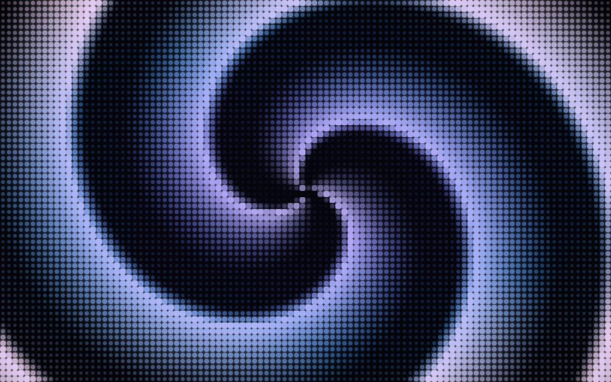
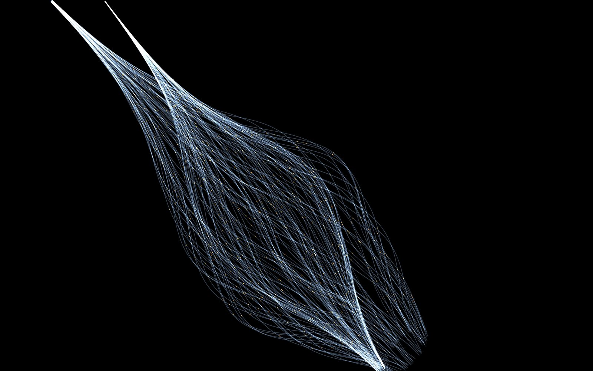
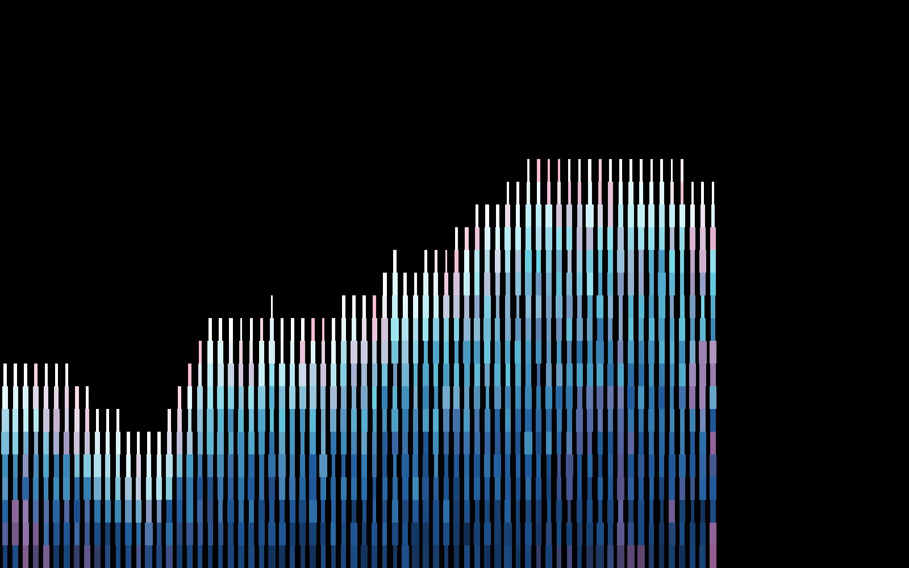
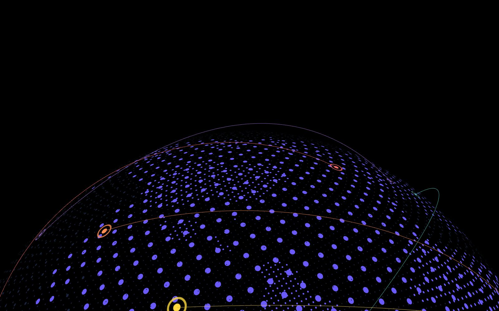
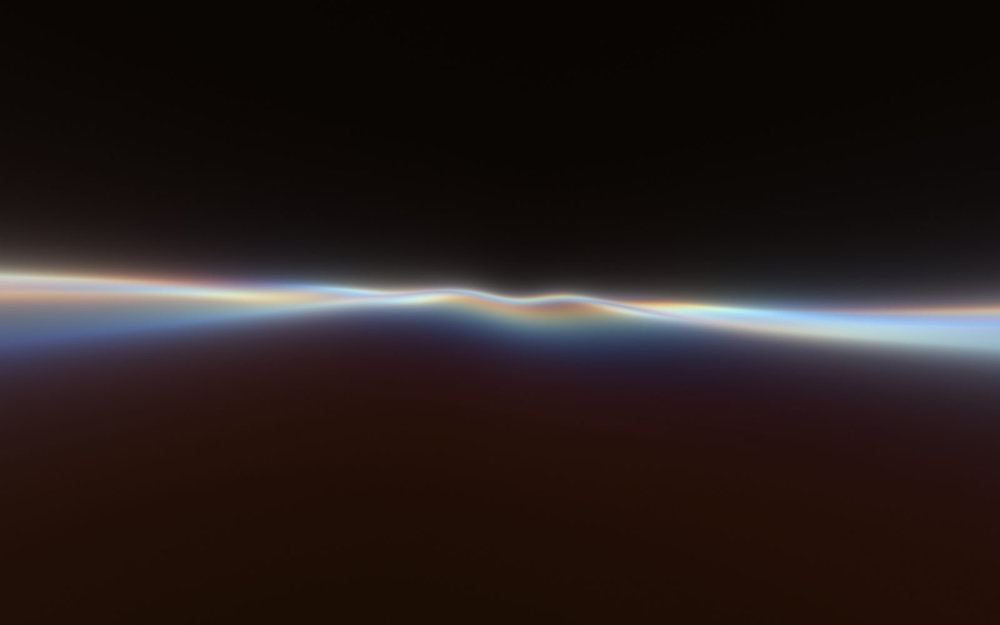
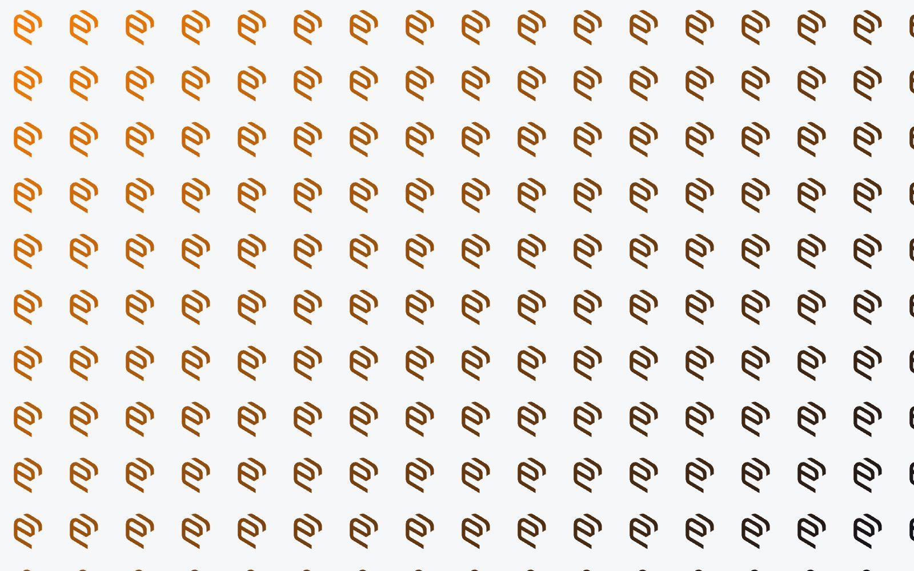

A collection of self-contained generative visual simulators, built for making stills and loops rather than for shipping into a product. Every simulator is a single HTML file with no build step, and every parameter is on a panel you can open, drag and export.
Hover a card to run it in place.
Open one for the full-screen version and its controls.
Several simulators read their own canvas back to export, so
file:// will not do; serve the folder over a local server.





